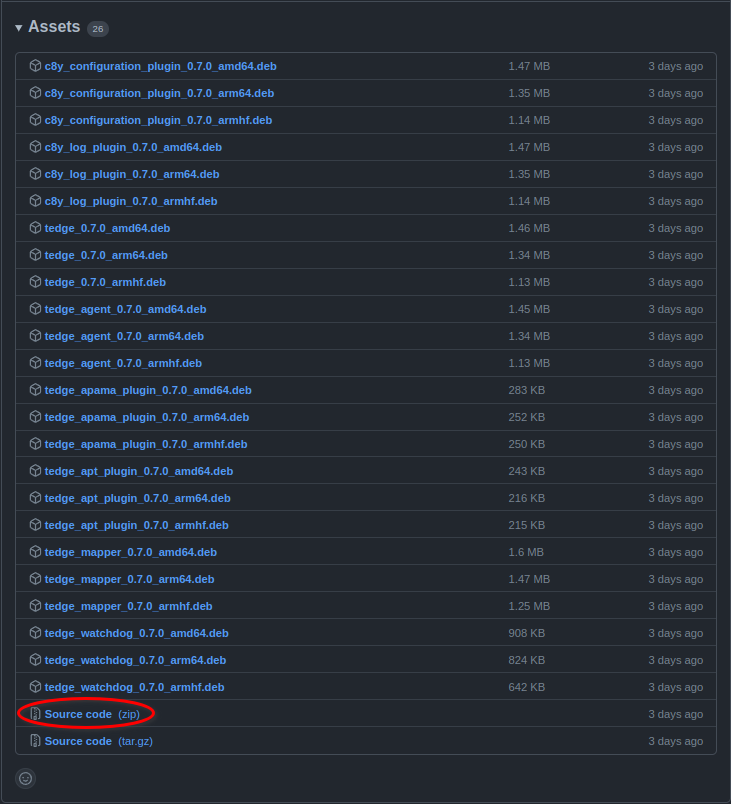
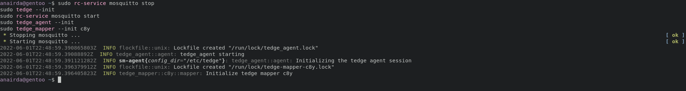

How to install thin-edge.io manually with OpenRC
This tutorial will demo how to install thin-edge.io manually for a non-debian linux distribution that uses OpenRC as its init system. The aim of this tutorial is to show how to get started with Cumulocity IoT even if your current system is not supported by the default installation of thin-edge.io. For reference, this tutorial is done with the following system specs:
- Operating System: Linux gentoo
- Linux kernel version: 5.15.41-gentoo-x86_64
- Architecture: x86_64
- Init system: OpenRC
Prerequisites
If you wish to build binaries from source, you will to install rust from https://www.rust-lang.org/tools/install.
You will also need to have mosquitto installed. Check your package manager for an available version, or you can building from source. (If you build from source, add WITH_TLS=yes flag to make).
Building from source
To build from source, download the Source code (zip) from the latest releases page.

Once downloaded, unzip it and enter the thin-edge.io directory and build the project with the --release flag:
unzip thin-edge*.zip
cd thin-edge*/
cargo build --release
This will build the thin-edge.io binaries in the target/release directory. You will then need to move each binary to /usr/bin or an equivalent location in $PATH.
A minimal thin-edge.io installation requires three components:
- tedge CLI
- tedge agent
- tedge mapper
sudo mv target/release/tedge /usr/bin
sudo mv target/release/tedge_agent /usr/bin
sudo mv target/release/tedge_mapper /usr/bin
You should now have access to the tedge, tedge_agent and tedge_mapper binaries.

Extracting binaries from debian files
Download the debian files from the latest releases page. For a minimal configuration of thin-edge.io with Cumulocity IoT, you will need to download:
- tedge_{VERSION}_amd64.deb
- tedge_agent_{VERSION}_amd64.deb
- tedge_mapper_{VERSION}_amd64.deb

Next, unpack each deb file and copy the binary to /usr/bin.
For tedge debian package do:
ar -x tedge_*_amd64.deb | tar -xf data.tar.xz
This unpacks two directories usr/bin/, move its contents to /usr/bin
sudo mv usr/bin/tedge /usr/bin
Note: Do the same for tedge_agent and tedge_mapper debian packages.
Step 1: Creating the tedge user
The next step is to create the tedge user. This is normally taken care by the debian package for the tedge CLI tool.
To do this in Gentoo, for example, you can:
sudo groupadd --system tedge
sudo useradd --system --no-create-home -c "" -s /sbin/nologin -g tedge tedge
Now that we have created the tedge user, we need to allow the tedge user to call commands with sudo without requiring a password:
sudo echo "tedge ALL = (ALL) NOPASSWD: /usr/bin/tedge, /etc/tedge/sm-plugins/[a-zA-Z0-9]*, /bin/sync, /sbin/init" >/etc/sudoers.d/tedge
Next, create the files and directories required by thin-edge.io and restart mosquitto too.
sudo rc-service mosquitto stop
sudo tedge --init
sudo rc-service mosquitto start
sudo tedge_agent --init
sudo tedge_mapper --init c8y
This should show the following output:

Note: if you do not restart mosquitto you will see a Connection refused error. Do not worry, this error can be ignored.
Ensure that running the init has created the following files and directories in /etc/tedge:

Step 3: Creating mosquitto bridge
To create the mosquitto bridge simply run:
sudo echo "include_dir /etc/tedge/mosquitto-conf" >> /etc/mosquitto/mosquitto.conf
You can test that mosquitto works by running:
sudo mosquitto --config-file /etc/mosquitto/mosquitto.conf
Step 4: Creating OpenRC service files
You will need service files for tedge_agent and tedge_mapper. For example:
Note that, for Cumulocity IoT, the
tedge connectcommand expects three service files called: mosquitto, tedge-agent and tedge-mapper-c8y
For the tedge-agent service an example file is the following:
FILE: /etc/init.d/tedge-agent
#!/sbin/runscript
start() {
ebegin "Starting tedge-agent"
start-stop-daemon --user tedge --start --background --exec tedge_agent
eend $?
}
stop() {
ebegin "Stopping tedge-agent"
start-stop-daemon --stop --exec tedge_agent
eend $?
}
For the tedge-mapper-c8y service an example file is the following:
FILE: /etc/init.d/tedge-mapper-c8y
#!/sbin/runscript
start() {
ebegin "Starting tedge-mapper-c8y"
start-stop-daemon --user tedge --start --background --exec tedge_mapper c8y
eend $?
}
stop() {
ebegin "Stopping tedge-mapper-c8y"
start-stop-daemon --stop --exec tedge_mapper
eend $?
}
sudo chmod +x /etc/init.d/tedge-agent
sudo chmod +x /etc/init.d/tedge-mapper-c8y
Next, we need to add a system.toml to /etc/tedge/, telling it to use OpenRC. To do this create the following file:
FILE: /etc/tedge/system.toml
[init]
name = "OpenRC"
is_available = ["/sbin/rc-service", "-l"]
restart = ["/sbin/rc-service", "{}", "restart"]
stop = ["/sbin/rc-service", "{}", "stop"]
enable = ["/sbin/rc-update", "add", "{}"]
disable = ["/sbin/rc-update", "delete", "{}"]
is_active = ["/sbin/rc-service", "{}", "status"]
Limit the file's permission to read only:
sudo chmod 444 /etc/tedge/system.toml
Finally, add the thin-edge.io services to start after boot:
sudo rc-update add tedge-agent default
sudo rc-update add tedge-mapper-c8y default
We are finally ready to connect to Cumulocity!